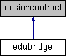

- Создано системой
 1.9.3
1.9.3
|
COOPENOMICS
v1
Кооперативная Экономика
|
Контракт edubridge — ЦПП «Образование» (приложение «Образовательный мост»).
Подробнее...
#include <edubridge.hpp>

Открытые члены | |
| edubridge (eosio::name receiver, eosio::name code, eosio::datastream< const char * > ds) | |
| void | convert (eosio::name coopname, eosio::name username, checksum256 sub_hash, eosio::asset amount, document2 statement) |
Конвертация паевого взноса пайщика в членский взнос ЦПП «Образование». Один шаг ledger2: o.edu.conv (TRANSFER w.wal.share → w.edu.member, Дт 80 / Кт 86). statement — подписанное пайщиком Заявление о конвертации (шаблон 3011), публикуется в реестр документов пакетом процесса подписки (package = sub_hash). Подробнее... | |
| void | setcourse (eosio::name coopname, uint64_t course_id, bool per_learner, eosio::asset target_fee_month, uint32_t minutes_per_month, uint32_t minutes_total, std::vector< edu_slot_terms > slots, bool course_payment, uint32_t discount_bp, uint32_t guarantee_secs, eosio::time_point_sec starts_at, uint32_t month_secs) |
| Задать условия курса: окна расписания со стоимостью занятия, способ расчёта с преподавателем (за каждого участника либо фиксированный за занятие), целевой членский взнос за месяц, минуты занятий в месяц и в программе, скидку за взнос разом, гарантийный срок и дату начала занятий. По ним контракт считает все суммы: учёт ведётся в минутах занятий. Подробнее... | |
| void | opensub (eosio::name coopname, eosio::name username, checksum256 sub_hash, uint64_t learner_id, uint64_t course_id, checksum256 statement_hash) |
Открыть подписку на курс для обучающегося. Срок и взнос считает chargefee. Подробнее... | |
| void | chargefee (eosio::name coopname, eosio::name username, checksum256 sub_hash, eosio::name period, eosio::asset expected, checksum256 statement_hash) |
Членский взнос участника за период (month либо course). Сумму, оплаченный срок и резерв преподавателям считает контракт; expected — сумма из подписанного заявления, расхождение с расчётом — отказ. Движения: o.edu.fee и, пока идёт гарантийный срок участника, o.edu.lock; после срока — o.edu.allot на оплату занятий. Подробнее... | |
| void | unlockfee (eosio::name coopname, checksum256 sub_hash) |
| Закрыть гарантийный срок участника: взнос перестаёт удерживаться целиком. Оплата занятий выделяется в резерв преподавателям (o.edu.allot), удержанной остаётся сумма возможного возврата при отказе, остальное — на кошельке программы (o.edu.unlock). Суммы считает контракт. Подробнее... | |
| void | regstatement (eosio::name coopname, eosio::name username, checksum256 sub_hash, document2 statement) |
Опубликовать Заявление о взносе (шаблон 3011), целиком покрытом кошельком программы участника: конвертации нет, и convert его не публикует. Движений средств нет. Подробнее... | |
| void | warrclaim (eosio::name coopname, eosio::name username, checksum256 sub_hash, document2 statement) |
| Опубликовать Заявление об аннулировании Подписки по Гарантийным условиям (шаблон 3013): основание для рассмотрения советом. Взнос участника замораживается до решения совета; подписка остаётся действующей. Подробнее... | |
| void | warrdecline (eosio::name coopname, eosio::name username, checksum256 sub_hash) |
| Совет отказал по заявлению об аннулировании Подписки по Гарантийным условиям: заморозка взноса снимается, подписка продолжает действовать. Гарантийный срок группы уже вышел — оплата занятий участника за гарантийный период остаётся на кошельке программы. Подробнее... | |
| void | warrgrant (eosio::name coopname, eosio::name username, checksum256 claim_hash, checksum256 sub_hash, document2 decision) |
| Решение совета об удовлетворении заявления по Гарантийным условиям (шаблон 3014): подписка аннулируется, весь взнос по ней возвращается в паевой взнос участника. Сумму берёт контракт. Подробнее... | |
| void | onwarrauth (eosio::name coopname, checksum256 hash, document2 authorization) |
| Обратный вызов совета: заявление по Гарантийным условиям удовлетворено, протокол (шаблон 3014) подписан. Подписка аннулируется, весь взнос по ней возвращается в паевой взнос участника. Подробнее... | |
| void | onwarrdecl (eosio::name coopname, checksum256 hash, std::string reason) |
| Обратный вызов совета: по заявлению по Гарантийным условиям отказано либо вопрос снят с повестки. Заморозка взноса снимается, подписка продолжает действовать. Подробнее... | |
| void | cancelsub (eosio::name coopname, eosio::name username, checksum256 sub_hash, bool underfilled) |
| Отменить подписку с возвратом членского взноса. Основание и сумму определяет контракт: недобор и отмена до начала занятий — взнос целиком, отказ в ходе подписки — половина остаточной стоимости подписки. Движения: o.edu.refund (кошелёк программы → кошелёк членских взносов участника) и, при недоборе, o.edu.retshr (→ паевой взнос). Подробнее... | |
| void | retshare (eosio::name coopname, eosio::name username, eosio::asset amount, document2 statement) |
| Прекратить участие пайщика в ЦПП «Образование» по его заявлению об аннулировании соглашения: весь остаток кошелька программы уходит в паевой (o.edu.retshr, Дт 86 / Кт 80), соглашение о программе аннулируется. Подписки к этому моменту закрыты. Подробнее... | |
| void | expiresub (eosio::name coopname, checksum256 sub_hash) |
| Закрыть истёкшую подписку — запись стирается из RAM. Подробнее... | |
| void | createexp (eosio::name coopname, eosio::name creator, eosio::checksum256 expense_hash, std::vector< ExpenseDomain::item > items, document2 statement) |
| Подать расход программы в шасси расходов. Сумма записки уходит из фонда программы в пул расходов (o.edu.expfnd), дальше расход ведёт шасси: решение совета, оплата или аванс под отчёт, отчёт, закрытие. Подробнее... | |
| void | onexpdone (eosio::name coopname, eosio::checksum256 expense_hash, uint8_t status, eosio::asset total_actual, std::vector< char > data) |
| Коллбэк шасси: расход завершён. Неизрасходованный остаток возвращается в фонд программы (o.edu.expunf), запись стирается. Подробнее... | |
| void | holdrid (eosio::name coopname, eosio::name username, checksum256 rid_hash, eosio::name rid_type, std::vector< checksum256 > pack, document2 act) |
Преподаватель передаёт материалы занятия на ответственное хранение по Акту (шаблон 3012). Один шаг ledger2: o.edu.hold (ISSUE → w.edu.hold, Дт 08 / Кт 76) — материалы числятся за преподавателем весь гарантийный срок курса. Запись запоминает курс занятия (course_id). Подробнее... | |
| void | openlesson (eosio::name coopname, eosio::name username, checksum256 rid_hash, uint64_t assignment_id, eosio::time_point_sec held_at, uint32_t number, uint32_t minutes, uint32_t slot) |
| Преподаватель отчитался о занятии календаря — открыть расчёт с участниками. Номер, дата, длительность и окно — из календаря группы; стоимость занятия — по окну, ставка преподавателя фиксируется на момент отчёта. Подробнее... | |
| void | closecharge (eosio::name coopname, checksum256 rid_hash) |
| Закрыть окно расчёта по занятию: подписки группы рассчитаны. Подробнее... | |
| void | droplesson (eosio::name coopname, checksum256 rid_hash) |
| Отозвать отчёт о занятии до расчёта с участниками. Подробнее... | |
| void | chargelesson (eosio::name coopname, checksum256 rid_hash, checksum256 sub_hash) |
| Расчёт за занятие по одной подписке: оплата занятия уходит из резерва подписки, взнос преподавателя по его ставке прибавляется к сумме занятия, разница до плановой ставки поступает на кошелёк программы. Подробнее... | |
| void | submitrid (eosio::name coopname, eosio::name username, checksum256 rid_hash, uint64_t assignment_id, eosio::asset amount, eosio::name rid_type, document2 statement) |
| Преподаватель подаёт Заявление о паевом взносе результатом интеллектуальной деятельности (шаблон 3008) по истечении гарантийного срока. Движений средств нет. Подробнее... | |
| void | onridauth (eosio::name coopname, checksum256 hash, document2 authorization) |
Обратный вызов совета: заявление о паевом взносе РИД принято (протокол 3009 подписан председателем). Движений средств нет — паевой фонд признаётся позже, по акту приёма-передачи (acceptrid). require_auth(_soviet). Подробнее... | |
| void | onriddecl (eosio::name coopname, checksum256 hash, std::string reason) |
Обратный вызов совета: в приёме паевого взноса РИД отказано либо вопрос снят с повестки. Движений средств нет — материалы с хранения снимает председатель (recallrid). require_auth(_soviet). Подробнее... | |
| void | signridact (eosio::name coopname, eosio::name username, checksum256 rid_hash, document2 decision, document2 act) |
| Преподаватель подписал Акт приёма-передачи РИД (шаблон 3010) — первая подпись. Протокол совета (3009) публикуется в реестр, акт уходит на вторую подпись председателю через одобрение («Запросы одобрений»). Подробнее... | |
| void | apprvridact (eosio::name coopname, eosio::name username, checksum256 rid_hash, document2 approved_document) |
Председатель подписал акт — вторая подпись. Вызывается контрактом совета после подтверждения одобрения: результат принимается в паевой фонд, как в acceptrid. Подробнее... | |
| void | dclridact (eosio::name coopname, eosio::name username, checksum256 rid_hash, std::string reason) |
| Председатель отказал в подписи акта — материалы остаются на хранении, заявление закрывает председатель отдельным действием. Подробнее... | |
| void | acceptrid (eosio::name coopname, checksum256 rid_hash, document2 decision, document2 act) |
| Приём РИД в паевой фонд по Протоколу совета (3009) и Акту приёма-передачи (3010). Два шага ledger2: o.edu.rid (Дт 04 / Кт 08) и o.edu.ridshr (TRANSFER w.edu.hold → w.edu.share, Дт 76 / Кт 80). Третий шаг — o.edu.settle: резерв выплат преподавателям списывается на сумму результата из резерва его курса; при нехватке приём отклоняется. Запись стирается. Подробнее... | |
| void | declinerid (eosio::name coopname, checksum256 rid_hash, document2 decision) |
| Отказ совета в приёме РИД по Протоколу (3009). Материалы снимаются с ответственного хранения (o.edu.retrid, Дт 76 / Кт 08), запись стирается. Подробнее... | |
| void | recallrid (eosio::name coopname, checksum256 rid_hash, std::string reason) |
| Снятие материалов занятия с ответственного хранения по рекламации внутри гарантийного срока (o.edu.retrid, Дт 76 / Кт 08). Материалы возвращаются преподавателю, паевой взнос по ним не оформляется. Подробнее... | |
| void | wthshare (eosio::name coopname, eosio::name username, eosio::asset amount, document2 statement) |
| Трансляция паевого взноса преподавателя из ЦПП «Образование» в ЦПП «Цифровой Кошелёк» по его Заявлению (шаблон 3015), на весь остаток или его часть. Один шаг ledger2: o.edu.wthshr (TRANSFER w.edu.share → w.wal.share, без проводки). Возврат паевого взноса идёт уже с Цифрового Кошелька штатным заявлением о возврате. Подробнее... | |
| void | signcontract (eosio::name coopname, eosio::name username, checksum256 contract_hash, document2 contract) |
Преподаватель подписывает Договор участия в хозяйственной деятельности (шаблон 3006) — первая подпись. Договор уходит на вторую подпись председателю совета (стол председателя, «Запросы одобрений»); до неё запись в educontracts стоит в pending. Подробнее... | |
| void | apprvcontr (eosio::name coopname, eosio::name username, checksum256 contract_hash, document2 approved_document) |
| Председатель подписал договор — вторая подпись. Вызывается контрактом совета после подтверждения одобрения: договор становится действующим, двухподписный документ публикуется в реестре. Подробнее... | |
| void | dclinecontr (eosio::name coopname, eosio::name username, checksum256 contract_hash, std::string reason) |
| Председатель отказал в подписи договора — запись стирается, преподаватель может подписать договор заново. Подробнее... | |
| void | setassign (eosio::name coopname, uint64_t assignment_id, eosio::name username, uint64_t course_id, eosio::asset rate) |
| Допуск преподавателя к курсу и его ставка за час на одного участника; не выше плановой ставки курса. Меняется по ходу курса. Подробнее... | |
| void | delassign (eosio::name coopname, uint64_t assignment_id) |
| Снять допуск преподавателя к курсу. Подробнее... | |
| void | termcontract (eosio::name coopname, eosio::name username, checksum256 contract_hash, std::string reason) |
| Прекратить Договор участия в хозяйственной деятельности — при выходе преподавателя из кооператива либо по соглашению сторон. Запись стирается; вернувшийся пайщик подписывает договор заново. Подробнее... | |
| void | cleanup () |
| Очистка отработавших записей по правилам контракта (lib/core/cleanup.hpp); плейбук вызывает её на каждом деплое. Подробнее... | |
Контракт edubridge — ЦПП «Образование» (приложение «Образовательный мост»).
Реализует actions четырёх процессов из YAML-стандартов рядом с этим .hpp:
eduterms): взнос и оплаченный срок, удержание по гарантии, резерв преподавателям по подписке, возврат при отмене (o.edu.refund, o.edu.retshr). Подписка на курс — рабочее состояние в RAM, стирается по истечении либо отмене.Soviet::create_approval → soviet::confirmapprv → коллбэк сюда), как договор в «Благоросте». Допуск преподавателя к курсу и его ставка на курсе хранятся в таблице eduassigns; отдельного документа у допуска нет. Движений средств нет.Все действия авторизуются ключом кооператива (require_auth(coopname)): пайщик подписывает документ, отправляет его бэкенд кооператива — как marketplace::convert. Все движения средств — через Ledger2::apply.
Источник правды по логике, гардам и операциям:
p.edu.access.standard.yamlp.edu.spend.standard.yamlp.edu.rid.standard.yamlp.edu.teach.standard.yaml
|
inline |
| void edubridge::acceptrid | ( | eosio::name | coopname, |
| checksum256 | rid_hash, | ||
| document2 | decision, | ||
| document2 | act | ||
| ) |
Приём РИД в паевой фонд по Протоколу совета (3009) и Акту приёма-передачи (3010). Два шага ledger2: o.edu.rid (Дт 04 / Кт 08) и o.edu.ridshr (TRANSFER w.edu.hold → w.edu.share, Дт 76 / Кт 80). Третий шаг — o.edu.settle: резерв выплат преподавателям списывается на сумму результата из резерва его курса; при нехватке приём отклоняется. Запись стирается.
Приём РИД преподавателя в паевой фонд по решению совета и акту — акт с двумя подписями приносит кооператив.
Совет принял положительное решение по заявлению (Протокол, шаблон 3009), преподаватель и председатель подписали Акт приёма-передачи (шаблон 3010). Контракт публикует оба документа в реестр пакетом процесса и проводит паевой взнос — тело приёма общее с apprvridact, см. accept_rid.cpp.
Штатный путь второй подписи — одобрение совета (signridact → «Запросы одобрений» → apprvridact); это действие остаётся для приёма акта, подписанного обеими сторонами вне одобрения.
Guards:
submitrid);| void edubridge::apprvcontr | ( | eosio::name | coopname, |
| eosio::name | username, | ||
| checksum256 | contract_hash, | ||
| document2 | approved_document | ||
| ) |
Председатель подписал договор — вторая подпись. Вызывается контрактом совета после подтверждения одобрения: договор становится действующим, двухподписный документ публикуется в реестре.
Председатель совета подписал договор УХД преподавателя — вторая подпись. Вызывается контрактом совета (soviet::confirmapprv) после подтверждения одобрения; подпись председателя уже проверена советом.
Договор становится действующим, двухподписный документ публикуется в реестре документов пакетом процесса (package = contract_hash).
username — тот, кто подтвердил одобрение в совете (председатель), а не преподаватель: договор находится по hash, документ публикуется на имя преподавателя из записи договора.
| void edubridge::apprvridact | ( | eosio::name | coopname, |
| eosio::name | username, | ||
| checksum256 | rid_hash, | ||
| document2 | approved_document | ||
| ) |
Председатель подписал акт — вторая подпись. Вызывается контрактом совета после подтверждения одобрения: результат принимается в паевой фонд, как в acceptrid.
Председатель совета подписал Акт приёма-передачи РИД — вторая подпись. Вызывается контрактом совета (soviet::confirmapprv) после подтверждения одобрения; подпись председателя уже проверена советом.
Результат принимается в паевой фонд по общему телу приёма (accept_rid.cpp): проводки, расчёт из резерва курса, публикация двухподписного акта пакетом процесса, запись стирается. Протокол совета опубликован раньше, при первой подписи (signridact).
username — тот, кто подтвердил одобрение в совете (председатель), а не преподаватель: материалы находятся по hash.
| void edubridge::cancelsub | ( | eosio::name | coopname, |
| eosio::name | username, | ||
| checksum256 | sub_hash, | ||
| bool | underfilled | ||
| ) |
Отменить подписку с возвратом членского взноса. Основание и сумму определяет контракт: недобор и отмена до начала занятий — взнос целиком, отказ в ходе подписки — половина остаточной стоимости подписки. Движения: o.edu.refund (кошелёк программы → кошелёк членских взносов участника) и, при недоборе, o.edu.retshr (→ паевой взнос).
Отмена подписки на курс с возвратом членского взноса.
Основание и сумму возврата определяет контракт:
underfilled) — взнос целиком и сразу в паевой взнос: это отмена решения кооператива;Edubridge::refusal_refund): доля всего взноса за занятия, по которым расчёт ещё не прошёл.Остаток по подписке расходится тем же действием: резерв за непроведённые занятия возвращается на кошелёк программы, взнос преподавателей за проведённые занятия остаётся в резерве курса.
Guards:
| void edubridge::chargefee | ( | eosio::name | coopname, |
| eosio::name | username, | ||
| checksum256 | sub_hash, | ||
| eosio::name | period, | ||
| eosio::asset | expected, | ||
| checksum256 | statement_hash | ||
| ) |
Членский взнос участника за период (month либо course). Сумму, оплаченный срок и резерв преподавателям считает контракт; expected — сумма из подписанного заявления, расхождение с расчётом — отказ. Движения: o.edu.fee и, пока идёт гарантийный срок участника, o.edu.lock; после срока — o.edu.allot на оплату занятий.
Членский взнос участника за период подписки.
Сумму считает контракт по условиям курса: помесячный взнос — занятия месяца по плановой ставке и целевой членский взнос; взнос разом — месяцы до конца программы со скидкой курса. Приложение называет только период и сумму из подписанного участником заявления: расхождение с расчётом — отказ, поэтому списывается ровно то, что участник подписал.
Тем же действием считается оплаченный срок, а оплата занятий по плановой ставке откладывается в резерв подписки: из него идёт расчёт с преподавателем за каждое проведённое занятие (chargelesson).
Движения средств:
o.edu.fee (TRANSFER w.edu.member → w.edu.fund) — взнос;o.edu.lock (w.edu.fund → w.edu.escrow) на весь взнос;o.edu.allot (w.edu.fund → w.edu.teach) на оплату занятий и o.edu.lock на сумму возможного возврата сверх резерва.Guards:
| void edubridge::chargelesson | ( | eosio::name | coopname, |
| checksum256 | rid_hash, | ||
| checksum256 | sub_hash | ||
| ) |
Расчёт за занятие по одной подписке: оплата занятия уходит из резерва подписки, взнос преподавателя по его ставке прибавляется к сумме занятия, разница до плановой ставки поступает на кошелёк программы.
Расчёт за занятие по одной подписке.
Участник с оплаченным доступом на дату занятия оплачивает его из резерва своей подписки. Оплата занятия по плановой ставке уходит из резерва подписки. На курсе с расчётом за каждого участника взнос преподавателя по его ставке прибавляется к сумме занятия с каждой подписки; на курсе с фиксированным расчётом сумма занятия одна и набирается с подписок по очереди. Остаток оплаты занятия поступает на кошелёк программы.
Приложение вызывает действие по каждой подписке курса отдельно; контракт считает одну. Число рассчитанных подписок и сумма в записи занятия — срез курса на дату занятия.
Движения средств:
o.edu.free (TRANSFER w.edu.teach → w.edu.fund) на разницу до плановой ставки;o.edu.unlock): занятие проведено, возвращать за него нечего;Guards:
| void edubridge::cleanup | ( | ) |
Очистка отработавших записей по правилам контракта (lib/core/cleanup.hpp); плейбук вызывает её на каждом деплое.
Очистка отработавших записей (lib/core/cleanup.hpp).
Правил нет: контракт новый, строк прежних версий в цепи нет, а процессы удаляют свои записи на терминальном шаге сами. Учёт средств курса (educourses) очистке не подлежит: его суммы — рабочее состояние, по ним оплачиваются результаты преподавателей. Действие есть, потому что раскатка вызывает cleanup у каждого прикладного контракта.
| void edubridge::closecharge | ( | eosio::name | coopname, |
| checksum256 | rid_hash | ||
| ) |
Закрыть окно расчёта по занятию: подписки группы рассчитаны.
Окно расчёта по занятию закрыто: подписки группы рассчитаны.
Пока окно открыто, подписки группы не закрываются — оплата занятия не должна уйти мимо преподавателя. Приложение закрывает окно сразу после расчёта по подпискам, тем же проходом. Повторный вызов ничего не меняет. Движений средств нет.
| void edubridge::convert | ( | eosio::name | coopname, |
| eosio::name | username, | ||
| checksum256 | sub_hash, | ||
| eosio::asset | amount, | ||
| document2 | statement | ||
| ) |
Конвертация паевого взноса пайщика в членский взнос ЦПП «Образование». Один шаг ledger2: o.edu.conv (TRANSFER w.wal.share → w.edu.member, Дт 80 / Кт 86). statement — подписанное пайщиком Заявление о конвертации (шаблон 3011), публикуется в реестр документов пакетом процесса подписки (package = sub_hash).
Конвертация паевого взноса пайщика в членский взнос ЦПП «Образование».
Доступ к курсу оплачивается членским взносом программы. Этот action — единственный путь пополнения членского кошелька программы: пайщик подаёт Заявление о конвертации (шаблон 3011) с просьбой транслировать паевой взнос с программы «Цифровой кошелёк» в программу «Образование». Зеркало marketplace::convert.
Одна ledger2-операция:
o.edu.conv (TRANSFER w.wal.share → w.edu.member, Дт 80 / Кт 86) — паевой переходит в целевое финансирование на членский кошелёк программы.Операция идёт под хэшем подписки (sub_hash) — тем же, что взнос и удержание в chargefee: в реестре процессов доступ к курсу один.
Guards:
| void edubridge::createexp | ( | eosio::name | coopname, |
| eosio::name | creator, | ||
| eosio::checksum256 | expense_hash, | ||
| std::vector< ExpenseDomain::item > | items, | ||
| document2 | statement | ||
| ) |
Подать расход программы в шасси расходов. Сумма записки уходит из фонда программы в пул расходов (o.edu.expfnd), дальше расход ведёт шасси: решение совета, оплата или аванс под отчёт, отчёт, закрытие.
Подать расход ЦПП «Образование» в шасси расходов (процесс p.edu.spend).
Программа — только инициатор. Сумма служебной записки уходит из фонда программы в пул расходов (o.edu.expfnd) и перестаёт быть свободной, после чего записка передаётся шасси расходов: решение совета, оплата по реквизитам либо выдача аванса под отчёт, отчёт с чеками, закрытие. На терминальном переходе шасси вызывает edubridge::onexpdone, где неизрасходованный остаток возвращается в фонд.
Транзит через пул нужен и по существу (видно, сколько средств программы отдано под расходы), и технически: шасси работает с кооперативным пулом.
Механика оплаты задаётся по каждой позиции (аванс под отчёт пайщику либо прямая оплата организации) и проверяется шасси.
Guards:
| void edubridge::dclinecontr | ( | eosio::name | coopname, |
| eosio::name | username, | ||
| checksum256 | contract_hash, | ||
| std::string | reason | ||
| ) |
Председатель отказал в подписи договора — запись стирается, преподаватель может подписать договор заново.
Председатель совета отказал в подписи договора УХД. Вызывается контрактом совета (soviet::declineapprv). Запись стирается — преподаватель может подписать договор заново; причина остаётся в журнале действий.
username — тот, кто отказал в совете (председатель), а не преподаватель: договор находится по hash.
| void edubridge::dclridact | ( | eosio::name | coopname, |
| eosio::name | username, | ||
| checksum256 | rid_hash, | ||
| std::string | reason | ||
| ) |
Председатель отказал в подписи акта — материалы остаются на хранении, заявление закрывает председатель отдельным действием.
Председатель совета отказал в подписи Акта приёма-передачи РИД. Вызывается контрактом совета (soviet::declineapprv). Движений средств нет: материалы остаются на ответственном хранении, заявление закрывает председатель протоколом совета (declinerid) либо снятием с хранения (recallrid); причина остаётся в журнале действий.
username — тот, кто отказал в совете (председатель), а не преподаватель.
| void edubridge::declinerid | ( | eosio::name | coopname, |
| checksum256 | rid_hash, | ||
| document2 | decision | ||
| ) |
Отказ совета в приёме РИД по Протоколу (3009). Материалы снимаются с ответственного хранения (o.edu.retrid, Дт 76 / Кт 08), запись стирается.
Отказ совета в приёме РИД преподавателя.
Совет принял отрицательное решение по заявлению (Протокол, шаблон 3009). Протокол публикуется в реестр документов пакетом процесса, материалы снимаются с ответственного хранения и возвращаются преподавателю.
Одна ledger2-операция:
o.edu.retrid (BURN с w.edu.hold, Дт 76 / Кт 08) — обязательство перед преподавателем и принятый актив закрываются встречно, паевой фонд остаётся нетронутым.Отказ без решения совета (решение не набрало голосов, истекло) протокола не имеет — такие материалы снимаются с хранения действием recallrid.
Guards:
| void edubridge::delassign | ( | eosio::name | coopname, |
| uint64_t | assignment_id | ||
| ) |
Снять допуск преподавателя к курсу.
Снятие допуска преподавателя к курсу.
Запись стирается: новых занятий по этому допуску преподаватель не откроет. Занятие, по которому уже идёт расчёт, доводится до конца — его ставка зафиксирована в записи занятия. Движений средств нет.
| void edubridge::droplesson | ( | eosio::name | coopname, |
| checksum256 | rid_hash | ||
| ) |
Отозвать отчёт о занятии до расчёта с участниками.
Отзыв отчёта о занятии до расчёта с участниками.
Преподаватель ошибся в дате либо длительности, либо на дату занятия нет участников с оплаченным доступом: запись занятия стирается, номер и минуты программы возвращаются группе. После первого расчёта по подписке занятие доводится до конца действием holdrid. Движений средств нет.
| void edubridge::expiresub | ( | eosio::name | coopname, |
| checksum256 | sub_hash | ||
| ) |
Закрыть истёкшую подписку — запись стирается из RAM.
Закрытие подписки по истечении оплаченного срока.
Запись стирается из RAM: в таблице живут только активные подписки (chain-RAM — рабочее состояние, история доступа — у парсера). Момент закрытия определяет кооператив: истечение оплаченного срока либо досрочно, по его решению.
Возврата участнику нет. Остаток по подписке расходится контрактом: удержанное и резерв за непроведённые занятия возвращаются на кошелёк программы, взнос преподавателей за проведённые занятия остаётся в резерве курса.
Подписка, открытая до учёта занятий, закрывается по прежнему правилу: удержанное возвращается на кошелёк программы, запись стирается.
Guards:
| void edubridge::holdrid | ( | eosio::name | coopname, |
| eosio::name | username, | ||
| checksum256 | rid_hash, | ||
| eosio::name | rid_type, | ||
| std::vector< checksum256 > | pack, | ||
| document2 | act | ||
| ) |
Преподаватель передаёт материалы занятия на ответственное хранение по Акту (шаблон 3012). Один шаг ledger2: o.edu.hold (ISSUE → w.edu.hold, Дт 08 / Кт 76) — материалы числятся за преподавателем весь гарантийный срок курса. Запись запоминает курс занятия (course_id).
Преподаватель передаёт материалы занятия кооперативу на ответственное хранение — расчёт по занятию завершается.
Работа преподавателя овеществляется материалами занятия: он отчитывается после занятия (openlesson), приложение проводит расчёт с участниками (chargelesson), и преподаватель подписывает Акт передачи материалов на ответственное хранение (шаблон 3012) на сумму из записи занятия.
Сумму и срок хранения берёт контракт: сумма — взнос преподавателя за занятие по числу участников с оплаченным доступом, срок — гарантийный срок курса от начала занятий. Кооператив принимает материалы как объект — паевым взносом они становятся позже, по заявлению преподавателя и решению совета.
Запись занятия стирается — в цепи остаётся только запись материалов. Она запоминает курс: при приёме результат оплачивается из резерва преподавателям этого курса.
Одна ledger2-операция:
o.edu.hold (ISSUE → w.edu.hold, Дт 08 / Кт 76) — материалы приняты, у кооператива возникло обязательство перед преподавателем.Guards:
| void edubridge::onexpdone | ( | eosio::name | coopname, |
| eosio::checksum256 | expense_hash, | ||
| uint8_t | status, | ||
| eosio::asset | total_actual, | ||
| std::vector< char > | data | ||
| ) |
Коллбэк шасси: расход завершён. Неизрасходованный остаток возвращается в фонд программы (o.edu.expunf), запись стирается.
Коллбэк шасси расходов — расход программы завершён (p.edu.spend).
Приходит inline-вызовом из шасси на терминальном переходе служебной записки: совет отклонил расход либо расход закрыт после отчёта.
Расход завершён — запись программы стирается из RAM, история движений остаётся в журнале действий.
Guards:
| void edubridge::onridauth | ( | eosio::name | coopname, |
| checksum256 | hash, | ||
| document2 | authorization | ||
| ) |
Обратный вызов совета: заявление о паевом взносе РИД принято (протокол 3009 подписан председателем). Движений средств нет — паевой фонд признаётся позже, по акту приёма-передачи (acceptrid). require_auth(_soviet).
Обратный вызов совета: заявление о паевом взносе РИД принято.
soviet::exec после утверждения протокола (шаблон 3009) зовёт это действие с hash = rid_hash и подписанным председателем протоколом. Контракт лишь сверяет, что материалы на хранении и заявление по ним подано: движений средств нет, паевой фонд признаётся позже, по акту приёма-передачи (acceptrid), который подписывают преподаватель и председатель. Запись в RAM не меняется — состояние «совет принял решение» ведёт приложение кооператива по этому действию в цепи.
Guards:
| void edubridge::onriddecl | ( | eosio::name | coopname, |
| checksum256 | hash, | ||
| std::string | reason | ||
| ) |
Обратный вызов совета: в приёме паевого взноса РИД отказано либо вопрос снят с повестки. Движений средств нет — материалы с хранения снимает председатель (recallrid). require_auth(_soviet).
Обратный вызов совета: в приёме паевого взноса РИД отказано либо вопрос снят с повестки по сроку.
Отрицательного протокола у совета не бывает, поэтому движений здесь нет: материалы остаются на ответственном хранении, снимает их председатель действием recallrid с основанием. Приложение кооператива по этому действию в цепи помечает заявление исходом совета.
Guards:
| void edubridge::onwarrauth | ( | eosio::name | coopname, |
| checksum256 | hash, | ||
| document2 | authorization | ||
| ) |
Обратный вызов совета: заявление по Гарантийным условиям удовлетворено, протокол (шаблон 3014) подписан. Подписка аннулируется, весь взнос по ней возвращается в паевой взнос участника.
Обратный вызов совета: заявление об аннулировании подписки по гарантийным условиям удовлетворено.
Совет проголосовал, председатель подписал протокол (шаблон 3014) — совет вызывает это действие с протоколом. Подписка аннулируется, весь взнос по ней возвращается в паевой взнос участника; сумму берёт контракт. Протокол публикуется в реестре документов пакетом подписки.
Guards:
| void edubridge::onwarrdecl | ( | eosio::name | coopname, |
| checksum256 | hash, | ||
| std::string | reason | ||
| ) |
Обратный вызов совета: по заявлению по Гарантийным условиям отказано либо вопрос снят с повестки. Заморозка взноса снимается, подписка продолжает действовать.
Обратный вызов совета: по заявлению об аннулировании подписки по гарантийным условиям отказано либо вопрос снят с повестки по сроку.
Подписки могло уже не быть (закрылась, пока совет решал) — тогда снимать нечего, и действие завершается без отказа, чтобы совет закрыл вопрос.
| void edubridge::openlesson | ( | eosio::name | coopname, |
| eosio::name | username, | ||
| checksum256 | rid_hash, | ||
| uint64_t | assignment_id, | ||
| eosio::time_point_sec | held_at, | ||
| uint32_t | number, | ||
| uint32_t | minutes, | ||
| uint32_t | slot | ||
| ) |
Преподаватель отчитался о занятии календаря — открыть расчёт с участниками. Номер, дата, длительность и окно — из календаря группы; стоимость занятия — по окну, ставка преподавателя фиксируется на момент отчёта.
Преподаватель отчитался о проведённом занятии — открывается расчёт.
Занятие берётся из календаря группы: приложение называет его номер в программе, дату, длительность и окно расписания. Запись занятия фиксирует ставку преподавателя на курсе и стоимость занятия для участника по окну. Учёт идёт в минутах: занятие занимает в программе свои минуты. Взнос преподавателя — его ставка за проведённое время, но не больше стоимости занятия по окну. После отчёта приложение по одной подписке вызывает chargelesson, закрывает окно расчёта closecharge, затем преподаватель передаёт материалы holdrid.
Порядка отчётов нет: занятия группы отчитываются в любой очерёдности, у каждого свой номер из календаря. Номер занимается один раз; второй расчёт подписки за тот же номер контракт отклоняет. В гарантийный срок группы занятие закрывается самим отчётом: акт и заявление преподаватель подписывает после срока, одной суммой за все занятия периода. Движений средств нет.
Guards:
| void edubridge::opensub | ( | eosio::name | coopname, |
| eosio::name | username, | ||
| checksum256 | sub_hash, | ||
| uint64_t | learner_id, | ||
| uint64_t | course_id, | ||
| checksum256 | statement_hash | ||
| ) |
Открыть подписку на курс для обучающегося. Срок и взнос считает chargefee.
Открытие подписки на курс для обучающегося.
Создаёт строку подписки без оплаченного срока. Срок, взнос и резерв преподавателям считает chargefee — приложение вызывает его той же транзакцией.
Движений средств нет.
Guards:
| void edubridge::recallrid | ( | eosio::name | coopname, |
| checksum256 | rid_hash, | ||
| std::string | reason | ||
| ) |
Снятие материалов занятия с ответственного хранения по рекламации внутри гарантийного срока (o.edu.retrid, Дт 76 / Кт 08). Материалы возвращаются преподавателю, паевой взнос по ним не оформляется.
Снятие материалов занятия с ответственного хранения без приёма.
Два основания. Подтверждённый гарантийный случай внутри срока: заявление в совет не уходит. И заявление, по которому совет решения о приёме не принял (не набрало голосов, истекло): отрицательного протокола у совета не бывает, поэтому отказ оформляется снятием с хранения с указанием основания. В обоих случаях материалы возвращаются преподавателю, паевой взнос не оформляется, паевой фонд не затрагивается — обязательство перед преподавателем и принятый на хранение актив закрываются встречно.
Одна ledger2-операция:
o.edu.retrid (BURN с w.edu.hold, Дт 76 / Кт 08).Guards:
acceptrid либо declinerid, после них снимать нечего);| void edubridge::regstatement | ( | eosio::name | coopname, |
| eosio::name | username, | ||
| checksum256 | sub_hash, | ||
| document2 | statement | ||
| ) |
Опубликовать Заявление о взносе (шаблон 3011), целиком покрытом кошельком программы участника: конвертации нет, и convert его не публикует. Движений средств нет.
Публикация Заявления о взносе, целиком покрытом кошельком программы.
Обычно заявление (шаблон 3011) публикует convert. Когда взнос за период полностью покрыт остатком кошелька программы участника, конвертации нет — и подписанное заявление публикуется этим действием в той же транзакцией, что открытие либо продление подписки. Движений средств нет. Заявление публикуется пакетом процесса подписки (package = sub_hash), как и в convert.
Guards:
| void edubridge::retshare | ( | eosio::name | coopname, |
| eosio::name | username, | ||
| eosio::asset | amount, | ||
| document2 | statement | ||
| ) |
Прекратить участие пайщика в ЦПП «Образование» по его заявлению об аннулировании соглашения: весь остаток кошелька программы уходит в паевой (o.edu.retshr, Дт 86 / Кт 80), соглашение о программе аннулируется. Подписки к этому моменту закрыты.
Прекращение участия пайщика в ЦПП «Образование».
Членский взнос программы возвращается в паевой только с прекращением участия в программе: по заявлению пайщика, при его выходе из кооператива и при отмене курса по недобору. Частичного перевода в паевой нет — пока пайщик участвует в программе, остаток его кошелька программы идёт только на новые подписки.
Основание — заявление об аннулировании соглашения об участии в программе (тот же бланк, что при выходе из кооператива, без выхода и с одной этой программой в таблице). Пайщик подписывает его, кооператив согласует и до этого действия закрывает все подписки пайщика с возвратом по Положению. Здесь остаток кошелька программы целиком уходит в паевой, а соглашение об участии в программе аннулируется. Чтобы снова учиться, пайщик подписывает оферту программы заново.
Одна ledger2-операция (при ненулевом остатке):
o.edu.retshr (TRANSFER w.edu.member → w.wal.share, Дт 86 / Кт 80) — инверсия o.edu.conv. Inline wallet::revokeagree — соглашение о программе «Обучение» снято.Guards:
| void edubridge::setassign | ( | eosio::name | coopname, |
| uint64_t | assignment_id, | ||
| eosio::name | username, | ||
| uint64_t | course_id, | ||
| eosio::asset | rate | ||
| ) |
Допуск преподавателя к курсу и его ставка за час на одного участника; не выше плановой ставки курса. Меняется по ходу курса.
Допуск преподавателя к курсу и его ставка на этом курсе.
Ставка — за час на одного участника. Администратор задаёт её при допуске и меняет по ходу курса: новая ставка действует на занятия, открытые после правки. Ставка не выше плановой ставки курса — оплата занятия заложена во взнос участника по плановой.
Движений средств нет.
Guards:
| void edubridge::setcourse | ( | eosio::name | coopname, |
| uint64_t | course_id, | ||
| bool | per_learner, | ||
| eosio::asset | target_fee_month, | ||
| uint32_t | minutes_per_month, | ||
| uint32_t | minutes_total, | ||
| std::vector< edu_slot_terms > | slots, | ||
| bool | course_payment, | ||
| uint32_t | discount_bp, | ||
| uint32_t | guarantee_secs, | ||
| eosio::time_point_sec | starts_at, | ||
| uint32_t | month_secs | ||
| ) |
Задать условия курса: окна расписания со стоимостью занятия, способ расчёта с преподавателем (за каждого участника либо фиксированный за занятие), целевой членский взнос за месяц, минуты занятий в месяц и в программе, скидку за взнос разом, гарантийный срок и дату начала занятий. По ним контракт считает все суммы: учёт ведётся в минутах занятий.
Условия курса: по ним контракт считает все суммы процесса.
Администратор задаёт окна расписания со стоимостью занятия каждого окна, способ расчёта с преподавателем (за каждого участника либо фиксированный за занятие), целевой членский взнос за месяц, минуты занятий, скидку за взнос разом, гарантийный срок и дату начала занятий. Взнос участника, резерв преподавателям, взнос преподавателя за занятие и возврат считаются отсюда.
month_secs — длина месяца в секундах для стенда разработки со сжатым временем; в работе приложение передаёт 0, и контракт считает месяц четырьмя неделями (28 дней). При действующих подписках она тоже не меняется.
При действующих подписках денежные условия не меняются: участники вносили взнос по ним. Дата начала занятий не меняется после первого занятия.
Движений средств нет.
Guards:
| void edubridge::signcontract | ( | eosio::name | coopname, |
| eosio::name | username, | ||
| checksum256 | contract_hash, | ||
| document2 | contract | ||
| ) |
Преподаватель подписывает Договор участия в хозяйственной деятельности (шаблон 3006) — первая подпись. Договор уходит на вторую подпись председателю совета (стол председателя, «Запросы одобрений»); до неё запись в educontracts стоит в pending.
Преподаватель подписывает Договор участия в хозяйственной деятельности — первая подпись.
Открывает процесс p.edu.teach: запись договора заводится в pending, а документ уходит председателю совета на вторую подпись через одобрение (Soviet::create_approval). Публикации в реестре документов на этом шаге нет — в реестр попадает уже двухподписный документ в apprvcontr.
Guards:
| void edubridge::signridact | ( | eosio::name | coopname, |
| eosio::name | username, | ||
| checksum256 | rid_hash, | ||
| document2 | decision, | ||
| document2 | act | ||
| ) |
Преподаватель подписал Акт приёма-передачи РИД (шаблон 3010) — первая подпись. Протокол совета (3009) публикуется в реестр, акт уходит на вторую подпись председателю через одобрение («Запросы одобрений»).
Преподаватель подписал Акт приёма-передачи (шаблон 3010) — первая подпись. Акт уходит на вторую подпись председателю совета через одобрение (Soviet::create_approval → стол председателя, «Запросы одобрений» → soviet::confirmapprv → apprvridact), как договор УХД (signcontract).
Протокол совета (3009), которым принято заявление, приходит вместе с актом и публикуется в реестр документов сразу: при второй подписи акт уже принимается по нему. Движений средств на этом шаге нет.
Guards:
| void edubridge::submitrid | ( | eosio::name | coopname, |
| eosio::name | username, | ||
| checksum256 | rid_hash, | ||
| uint64_t | assignment_id, | ||
| eosio::asset | amount, | ||
| eosio::name | rid_type, | ||
| document2 | statement | ||
| ) |
Преподаватель подаёт Заявление о паевом взносе результатом интеллектуальной деятельности (шаблон 3008) по истечении гарантийного срока. Движений средств нет.
Преподаватель подаёт Заявление о паевом взносе результатом интеллектуальной деятельности (РИД).
Продолжает процесс p.edu.rid, открытый приёмом материалов на ответственное хранение (holdrid). Гарантийный срок курса истёк, материалы остались у кооператива — преподаватель просит принять их в паевой фонд. Заявление (шаблон 3008) публикуется в реестр документов, и тем же действием контракт ставит вопрос в повестку совета: инлайн soviet::createagenda с type=eduacptrid, hash=rid_hash, документом повестки — этим заявлением и обратными вызовами onridauth / onriddecl. Совет подписывает протокол (шаблон 3009) по заявлению — как по возврату в Столе заказов. Движений средств на этом шаге нет: паевой фонд признаётся по решению совета и акту (acceptrid).
Guards:
| void edubridge::termcontract | ( | eosio::name | coopname, |
| eosio::name | username, | ||
| checksum256 | contract_hash, | ||
| std::string | reason | ||
| ) |
Прекратить Договор участия в хозяйственной деятельности — при выходе преподавателя из кооператива либо по соглашению сторон. Запись стирается; вернувшийся пайщик подписывает договор заново.
Прекращение Договора участия в хозяйственной деятельности.
Договор действует, пока преподаватель — пайщик: с выходом из кооператива он прекращается, так же как и по соглашению сторон. Запись стирается — в RAM живут только действующие и ожидающие договоры; вернувшийся пайщик подписывает договор заново.
Движений средств нет.
Guards:
| void edubridge::unlockfee | ( | eosio::name | coopname, |
| checksum256 | sub_hash | ||
| ) |
Закрыть гарантийный срок участника: взнос перестаёт удерживаться целиком. Оплата занятий выделяется в резерв преподавателям (o.edu.allot), удержанной остаётся сумма возможного возврата при отказе, остальное — на кошельке программы (o.edu.unlock). Суммы считает контракт.
Гарантийный срок участника истёк — взнос перестаёт удерживаться целиком.
Пока идёт гарантийный срок, взнос удержан весь: возврат по гарантии — полный. После срока остаётся возврат при отказе — половина остаточной стоимости подписки. Действие выделяет оплату занятий в резерв преподавателям и оставляет удержанной только сумму возможного возврата сверх резерва; остальное остаётся на кошельке программы.
Дальше удержание уменьшается само, по мере проведения занятий (chargelesson). Суммы считает контракт. Приложение вызывает действие по одной подписке.
Движения средств:
o.edu.unlock (TRANSFER w.edu.escrow → w.edu.fund) — удержанное сверх суммы возможного возврата;o.edu.allot (TRANSFER w.edu.fund → w.edu.teach) — оплата занятий.Guards:
| void edubridge::warrclaim | ( | eosio::name | coopname, |
| eosio::name | username, | ||
| checksum256 | sub_hash, | ||
| document2 | statement | ||
| ) |
Опубликовать Заявление об аннулировании Подписки по Гарантийным условиям (шаблон 3013): основание для рассмотрения советом. Взнос участника замораживается до решения совета; подписка остаётся действующей.
Публикация Заявления об аннулировании Подписки по Гарантийным условиям.
Положение о ЦПП «Образование» (п. 4.4.2) даёт участнику право аннулировать подписку, для которой объявлены гарантийные условия, обоснованным заявлением. Заявление (шаблон 3013) рассматривает совет: при удовлетворении подписка закрывается с возвратом всей списанной стоимости на паевой (cancelsub), при отказе у участника остаётся обычный отказ от подписки. Здесь заявление публикуется в реестре документов и тем же действием ставится в повестку совета (тип решения eduguarantee, hash = sub_hash, документ повестки — это заявление). Совет подписывает протокол (шаблон 3014) — приходит onwarrauth, отказывает либо не решает в срок — onwarrdecl. Движений средств нет, подписка остаётся действующей.
Guards:
Срок гарантийных условий контракт не проверяет: его объявляет кооператив в карточке курса, и он же принимает заявление к рассмотрению.
| void edubridge::warrdecline | ( | eosio::name | coopname, |
| eosio::name | username, | ||
| checksum256 | sub_hash | ||
| ) |
Совет отказал по заявлению об аннулировании Подписки по Гарантийным условиям: заморозка взноса снимается, подписка продолжает действовать. Гарантийный срок группы уже вышел — оплата занятий участника за гарантийный период остаётся на кошельке программы.
Совет отказал по заявлению об аннулировании подписки по гарантийным условиям.
Общий порядок отказа — Edubridge::decline_guarantee: его же зовёт обратный вызов совета onwarrdecl. Действие оставлено для заявлений, поданных до повестки контракта.
Заморозка взноса снимается, подписка продолжает действовать. Гарантийный срок группы ещё идёт — подписка возвращается к обычному порядку. Срок уже вышел — оплата занятий, проведённых участнику за гарантийный период, преподавателям не выделяется и остаётся на кошельке программы; оплата непроведённых занятий выделяется в резерв преподавателям как у прочих подписок (o.edu.allot), удержание уменьшается до суммы возможного возврата (o.edu.unlock).
| void edubridge::warrgrant | ( | eosio::name | coopname, |
| eosio::name | username, | ||
| checksum256 | claim_hash, | ||
| checksum256 | sub_hash, | ||
| document2 | decision | ||
| ) |
Решение совета об удовлетворении заявления по Гарантийным условиям (шаблон 3014): подписка аннулируется, весь взнос по ней возвращается в паевой взнос участника. Сумму берёт контракт.
Решение совета об удовлетворении заявления по Гарантийным условиям.
Совет удовлетворил заявление участника (п. 4.4.3–4.4.4 Положения о ЦПП «Образование»): подписка аннулируется, весь взнос по ней возвращается в паевой взнос участника. Протокол (шаблон 3014) публикуется в реестре документов и привязывается к заявлению.
Сумму возврата берёт контракт — всё собранное по подписке. Возврат обеспечен всегда: взнос участника удержан. Взнос преподавателей за уже проведённые занятия выделяется в резерв курса из средств этого же курса, сколько их есть; средства других курсов не используются.
Guards:
| void edubridge::wthshare | ( | eosio::name | coopname, |
| eosio::name | username, | ||
| eosio::asset | amount, | ||
| document2 | statement | ||
| ) |
Трансляция паевого взноса преподавателя из ЦПП «Образование» в ЦПП «Цифровой Кошелёк» по его Заявлению (шаблон 3015), на весь остаток или его часть. Один шаг ledger2: o.edu.wthshr (TRANSFER w.edu.share → w.wal.share, без проводки). Возврат паевого взноса идёт уже с Цифрового Кошелька штатным заявлением о возврате.
Трансляция паевого взноса преподавателя из ЦПП «Образование» в ЦПП «Цифровой Кошелёк».
Принятый результат зачисляется преподавателю паевым взносом на кошелёк программы — баланс его договора участия в хозяйственной деятельности (acceptrid, o.edu.ridshr). Вернуть паевой взнос деньгами можно только с Цифрового Кошелька, поэтому преподаватель сначала переводит туда весь остаток или его часть своим заявлением (шаблон 3015; п. 5.3.1 договора), а возврат оформляет уже штатным заявлением о возврате паевого взноса.
Одна ledger2-операция:
o.edu.wthshr (TRANSFER w.edu.share → w.wal.share, без проводки — оба кошелька на счёте 80).Записи в RAM нет: заявление исполняется сразу и публикуется в реестр документов.
Guards: